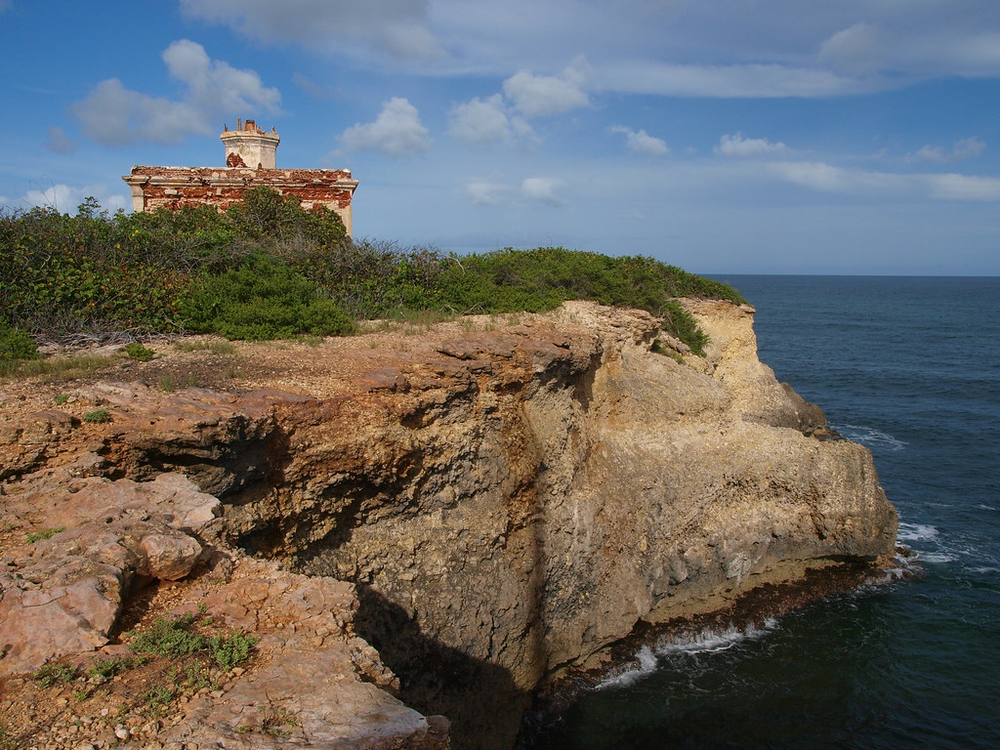
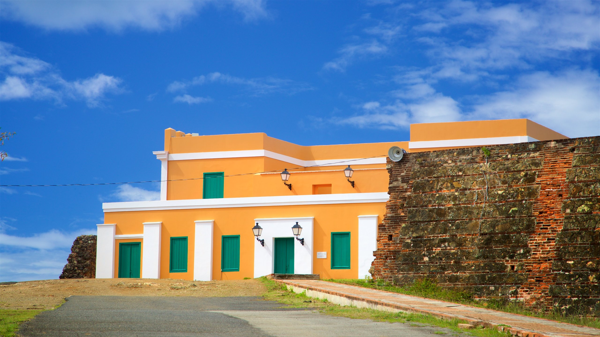

Faro de Verdiales
El Faro de Puerto Ferro está ubicado en la costa sur de la isla de Vieques, en la punta Cayo Verdiales. Este faro de quinto orden, cuya luz tenía un alcance de 12 millas, es muy parecido al de Punta Mulas, que se encuentra en la costa norte de la isla-municipio. Se utilizó para guiar la navegación por el peligroso Pasaje de Vieques. Fue uno de los últimos faros que se construyeron durante el gobierno español.
Museo El Fortín de Conde Mirasol
El Fortín Conde de Mirasol fue el último fortín construido por los españoles en América. Se asienta sobre una hermosa colina que domina el pueblo de Isabel Segunda en Vieques y los cayos cercanos. El fuerte nunca se completó y ahora alberga un museo de arte e historia, así como los archivos históricos de Vieques y una estación de radio.
Pueden visitar en:
Hombre De Puerto Ferro
En 1991, los arqueólogos desenterraron los restos óseos de un hombre antiguo, junto con otros objetos, en un sitio tierra adentro en el lado sur de la isla de Vieques. Este descubrimiento señala a Vieques como una de las culturas pre-Arawak de la edad de piedra más antiguas conocidas en las Antillas. A través de la datación por radiocarbono, se estima que los restos datan de aproximadamente 500-2300 a. Los restos fueron enterrados en un área rodeada de enormes rocas. Nadie sabe si las rocas estaban allí naturalmente, o si de alguna manera fueron trasladadas a este lugar por alguna razón por los pueblos antiguos. No hay otras rocas enormes en el área. Se retiraron los restos óseos y se excavó el área con la esperanza de encontrar más artefactos. Hoy, todo lo que queda en el sitio son los cantos rodados.
Pueden visitar en:
Playa La Plata
La playa La Plata está localizada en el área este de la isla y pertenece al Refugio Nacional de Vida Silvestre de Vieques. A pesar de su belleza, es poco visitada, para llegar a esta playa es recomendable un vehículo todo terreno. No tiene facilidades de baños, merenderos o kioscos, la arena es blanca y el agua azul turquesa, perfecta para snorkeling, pasar un día con la familia o para coger un poco de sol.
Pueden visitar en: